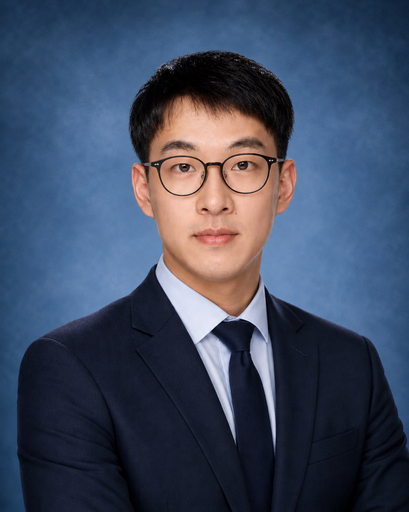

PhD in Computational Physical Metallurgy · Norwegian University of Science and Technology
I am a computational materials scientist working on multiscale modelling of microstructure evolutions, defect kinetics, and phase transformations in metallic alloys, with particular emphasis on multicomponent aluminium alloys. My research bridges first-principles calculations, atomistic simulations, and mesoscale numerical models to understand how alloy composition and processing conditions govern microstructure evolution and influence materials performance—knowledge that directly informs alloy design.
I received my M.Eng. and B.Eng. in Mechanical Engineering from Southeast University, China, where I developed phase-field and lattice Boltzmann models for dendritic solidification. I defended my PhD thesis in February 2026.

Numerical modelling of phase transformations during solidification and thermo-mechanical treatments in multicomponent alloys, grounded in thermodynamic and kinetic theory.
Investigation of solute and vacancy diffusion in multicomponent alloys using atomistic simulations, with a focus on complex local chemical environments and solute trapping effects.
Theoretical study of stability of non-equilibrium phases, phase separation, and ordering in disordered solid solutions using DFT, statistical mechanics, and CALPHAD methods.
Implementation of machine learning potentials and data-driven techniques for the design and optimisation of advanced structural materials.
Developed a multiscale framework coupling vacancy evolution with cluster dynamics to simulate solute clustering during multistage ageing. Applied MC-based simulated annealing to derive cluster formation and vacancy trapping energies, revealing how quenching rate controls natural-ageing hardening kinetics.
Built an ML interatomic bond model for Al–Mg–Si and improved the KRA scheme for vacancy migration barriers. Large-scale KMC simulations clarified the interplay between solute clustering and vacancy trapping during natural ageing.
Combined DFT calculations, KMC simulations, and a physics-based analytical model to predict vacancy diffusion coefficients as a function of temperature and solute concentration.
Used special quasi-random structures and DFT to construct free-energy curves and investigate vacancy-mediated phase transformation pathways.
Integrated phase-field modelling of dendritic solidification with the lattice Boltzmann method for fluid–structure interaction and melt convection.
† co-first author
Python, C++, Fortran, Linux, LaTeX
ASE & VASP (DFT), SPPARKS (KMC / MC), ATAT (cluster expansion, SQS), LAMMPS (MD, MLIP)
Phase-field model (dendrite solidification), KWN model & cluster dynamics (precipitation kinetics), Lattice Boltzmann method (CFD)
Department of Materials Science and Engineering
Norwegian University of Science and Technology (NTNU)
Trondheim, Norway